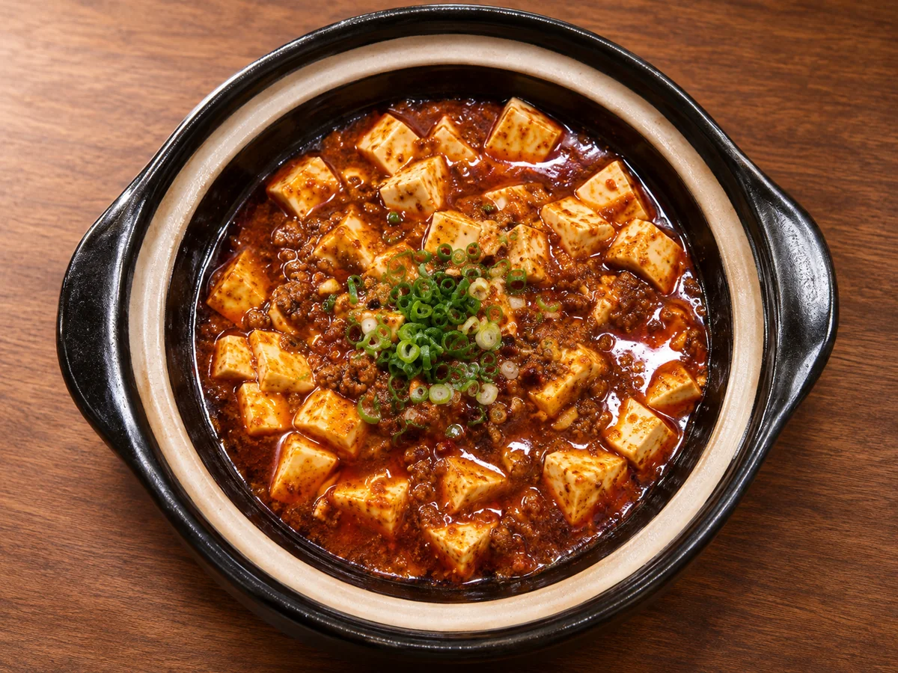

대표 메뉴



예약 방법
일본어 예약 페이지에서 날짜, 시간, 인원을 선택한 뒤 좌석만 예약하거나 코스 요리를 함께 주문할 수 있습니다. 코스 요리는 2명부터 예약할 수 있습니다.
13명 이상은 예약 페이지에서 단체 문의를 선택해 주세요. 최대 45명까지 이용할 수 있습니다.
영업시간 · 오시는 길
- 점심
- 월요일~토요일 11:30~14:00
- 저녁
- 매일 17:30~22:00. 일요일은 저녁에만 영업합니다.
- 주소
- 후쿠오카시 하카타구 하카타에키미나미 3-7-14
福岡県福岡市博多区博多駅南3丁目7-14 岡元ビル - 도보
- 하카타역 동쪽의 지쿠시 출구(筑紫口)에서 약 10분 걸립니다.
- 주차
- 가게 앞 전용 주차장에 2대까지 주차할 수 있습니다.
- 전화
- 092-481-1369 (해외에서 걸 때 +81-92-481-1369)